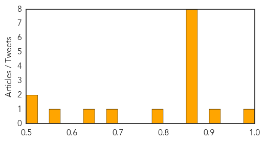
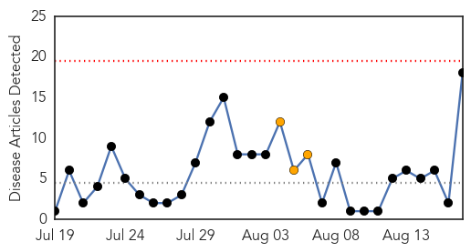
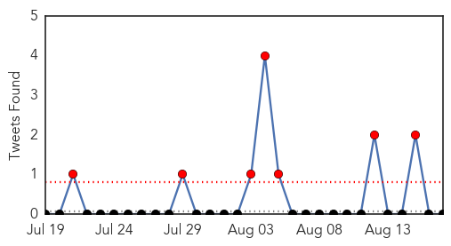
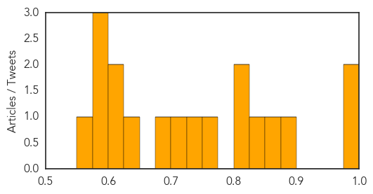

Unknown
30-Day Web Trend
0 alerts, 0 warnings

30-Day Twitter Trend
6 alerts, 0 warnings

Article Locations

Article Confidences
Top Articles:
- 0.982
- Almost 160 people infected by salmonella poisoning in national outbreak as experts believe cases 'could be linked'
- 0.910
- The world windows to Thailand
- 0.866
- Curfew set for second night in Missouri city where black teen shot
- 0.866
- Ferguson curfew helping to maintain peace-Missouri governor
- 0.866
- Followers of the Shi'ite Muslim Houthi group shout slogans as they attend an anti-government gathering in Arhab, north of Yemen's capital Sanaa
- 0.866
- Palestinians look out of their house, on the fourth day of a five-day ceasefire in Johr El-Deek village near the central Gaza Strip
- 0.866
- Ukraine says its forces take police station in Luhansk, raise national flag
- 0.866
- Separatists shoot down Ukrainian Mig-29 fighter plane
- 0.866
- Pakistan protest leader Khan calls for show of strength
- 0.866
- Victims of the Colombian armed conflict attend a conference in Havana
- 0.788
- TB Epidemic Threat Hangs Over Ukraine Conflict
- 0.685
- Health Minister German outlaws fluoridation of all tap water
- 0.639
- Those Exposed to Student with Tuberculosis Sought
- 0.559
- Farsnews
- 0.505
- Fake Cures For AIDS Have A Long And Dreadful History
- 0.505
- Fake Cures For AIDS Have A Long And Dreadful History
Top Tweets:
-
No tweets found for Aug 17, 2014
Cholera
30-Day Web Trend
0 alerts, 3 warnings

30-Day Twitter Trend
12 alerts, 0 warnings

Article Locations

Article Confidences
Top Articles:
- 0.997
- Cholera Fears As Floods Devastate Nepal
- 0.982
- Need to adopt strategies to fight Ebola outbreak – Minister
- 0.896
- Scores missing in Nepal as heavy rains spark cholera fears
- 0.865
- Nepal fears cholera outbreak after floods, landslides kill at least 85
- 0.846
- the edge of knowledge
- 0.802
- More than 100 missing after floods in Nepal
- 0.802
- travel and tourism in Nepal comes to a standstill Danger: ...
- 0.772
- Nepal floods kill at least 97 as cholera fears rise
- 0.733
- Nepal floods kill at least 85, raise cholera fears
- 0.714
- Fighting Ebola the Medieval Way
- 0.689
- Nepal floods kill at least 89 as cholera fears rise
- 0.638
- Nepal floods kill at least 89 as cholera fears rise
- 0.603
- Over 100 dead in Nepal and India floods
- 0.600
- Nepal floods kill at least 85
- 0.599
- Malaysia General Business Sports and Lifestyle News
- 0.592
- Nepal flood deaths spark fears of cholera
- 0.592
- Nepal floods kill at least 85 as cholera fears raised
- 0.554
- Monsoon crisis in North India: At least 28 killed and 10,000 made homeless as flash floods strike eastern UP
Top Tweets:
- 0.514
- RT: Ghana Cholera Outbreak At 'Staggering' Level, Over 3100 Infected - http://t.co/F64JsoRFK3